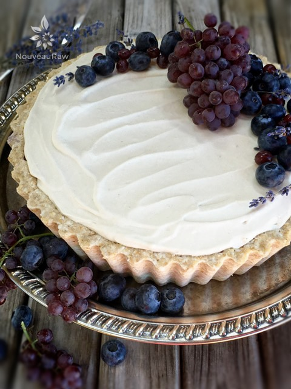
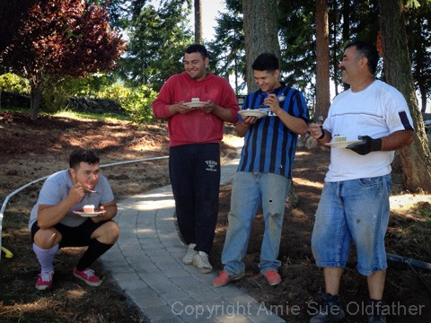

English Lavender and Blueberry Cheesecake
~ raw, vegan, gluten-free ~
This has been my year for fruit blessings. It is either growing abundantly around me or others are sharing them with me and for that, I am mightily blessed and appreciative.
I have related this story before, I think… but every time I see blueberries I think of it so I will tell it once more (short version). Several years ago while Bob and I were living in Alaska, I bought a 2 lb container of beautiful, plump blueberries.
We had an hour drive ahead of us so we decided to snack on them while we drove homeward bound. I set the container between us. All was good.
I got caught up in sharing a story with Bob and as usual, my hands were flailing around, because without hand gestures, how can one tell a story??
Anyway, my hand hit the corner of the blueberry container and within seconds, Bob was showered with 2 lbs of purple orbs. He was driving, concentrating on the road. I shrieked but he just remained calm, smiled with his attention on the road and continued to eat blueberries, picking them from the dash, between his legs, in the folds of his shirt… you name it. What a man! He is just too cool. :)
Moving on to the making of this cheesecake. I must say that I just love deep dish cheesecakes and pies. A dessert with height is just something to admire. So for this recipe, I used my 10″ deep fluted tart pan.
After pouring the filling into the crust, I was left with about 1/4″ of space between the top of the filling and the top of the crust. This is where I filled it in with the blueberry sauce. If you don’t have the deep fluted quiche pan, I recommend using a 9″ Springform pan so you can get the height.
For the topping, I have done it several ways. The first time I whipped up some canned coconut milk into a frosting because I wasn’t able to get any Young Thai Coconuts locally. I provided a link below to the brand that I used. I have also used my Home-Style Vanilla Bean Icing, which is what you see in the photo. It’s all about using the ingredients you have, can get a hold of, or with what you feel comfortable with. I hope you enjoy this cheesecake. Please let me know below. Blessings, amie sue
Yields 10″ deep fluted pan
Crust:
- 1 cups rolled gluten-free oats, soaked & dehydrated
- 1 cups raw almonds, soaked and dehydrated, peeled
- 1 1/4 cup shredded coconut
- 1/4 tsp Himalayan pink salt
- 1/2 tsp liquid stevia
- 1/4 cup coconut butter, softened or 2 Tbsp melted coconut oil
- 1/2 cup water
- 2 Tbsp maple syrup
Filling:
- 2 cups cashews, soaked 2+ hours
- 1 Tbsp fresh lemon juice
- 1/2 cup maple syrup
- 1 tsp liquid stevia
- 1 tsp vanilla extract
- 1 Tbsp ground lavender buds
- ½ tsp Himalayan pink salt
- 2 cups organic blueberries, divided
- 3/4 cup raw coconut oil, melted
- 3 Tbsp lecithin, powdered
Blueberry sauce layer: yields 3 cups
- 4 cups fresh, organic blueberries
- 2 Tbsp raw honey or maple syrup
- 2 Tbsp chia seeds
- 1/4 cup water
- 1 tsp vanilla extract
- dash sea salt
Coconut whipped frosting:
Preparation:
Crust:
- Line the base of the pan with plastic wrap or give it a light coating of coconut oil. This will aid in removing the cake from the base.
- Place the oats, almonds, coconut, and salt in the food processor, using the “S” blade, and process until crumbly.
- Add stevia, coconut butter, water, and maple syrup. Process until the batter sticks together when pinched.
- Loosely place the crust batter around the bottom of the pan.
- With a gentle hand, drag some of the batter up along the sides of the pan. Complete the edge first, then the base.
- Press the batter in firmly but evenly.
- Set aside while you prepare the filling.
Prepare the Filling:
- Soak, drain, and rinse the cashews. This step should NOT be skipped. This will soften the cashews to help create a smooth mouth-feel for the cheesecake.
- In a high-powered blender combine the cashews, lemon juice, maple syrup,1 cup of blueberries, stevia, vanilla, lavender, and salt. Blend until creamy.
- Rub the batter between two fingers, if you feel any grit, continue blending. This can take 3-5 minutes depending on the blender.
- With the blender running and a vortex in motion, drizzle in the coconut oil and then add the lecithin, blending just long enough to get everything incorporated.
- Add the remaining blueberries and pulse, just breaking them up but leaving identifiable pieces.
- Pour into the crust that you have prepared and place it in the fridge or freezer to set up.
Blueberry sauce layer:
- In a small bowl combine the chia seeds and water. Mix and let it sit for 10 minutes so the chia seeds can absorb the water.
- In the food processor, fitted with the “S” blade, place the blueberries, honey, vanilla, and salt. Process until the berries are broken down.
- Add the chia gel and run the processor for 30 seconds or until the sauce is well blended.
- Pour on top of the cheesecake and gently spread evenly.
- Place in the fridge to chill and firm up.
Coconut Whipped topping:
- Chill 2 cans of full-fat coconut milk in the fridge overnight or for at least 8 hours.
- When ready to use, DO NOT shake the cans, remove the lids of the cans. During the chilling process, the coconut will separate into 2 layers, liquid, and a thick cream. Pour the liquid off into a glass (save for your next smoothie) and place the cream part only into a medium mixing bowl.
- With a hand mixer, mix until small stiff peaks form, add the vanilla and stevia. Mix again and place in the fridge for a few hours to firm up a bit. You can use any liquid sweetener you wish. Start with 1 Tbsp and work up to the level of sweetness you desire.

Now it is time to add the last layer… and decorate. Enjoy!

These are my taste testers… Marcos on the far right with his 3 of his boys. See that beautiful path running between them? They have been working hard creating that! They do amazing work and I really enjoy having them here. Great talent, funny, kind and they like my food… what’s not to like? hehe When I asked Adan on the far left what he thought of the dessert, he crouched to the ground and jumped. That was his way of saying he loved it.
© AmieSue.com